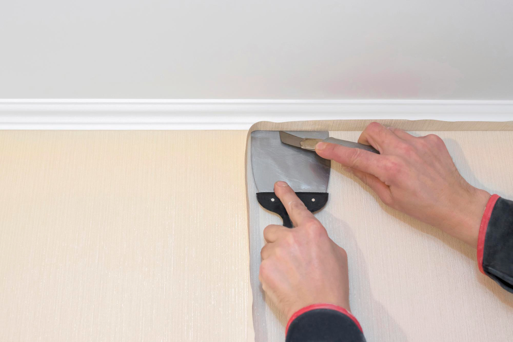

사회적기업 · 중소기업
소규모 집수리·시공·생활 서비스가 필요한 경기도민
경기도일자리재단 직업교육 수료생과 도민을 연결하는 무료 공공 직무매칭 서비스입니다
직업훈련을 수료한 활동가는 실무경험을 쌓고,
도민은 검증된 인력서비스를 무료로 제공받는 상생 모델입니다
소규모 집수리·시공·생활 서비스가 필요한 경기도민
단기 인력 지원·실무 프로젝트가 필요한 곳
디자인·콘텐츠 제작·마케팅 도움이 필요한 소상공인
보내드림만의 3가지 특별함을 만나보세요
경기도일자리재단에서 제공하는 공공 서비스로, 도민 누구나 비용 부담 없이 이용할 수 있습니다.
재단에서 직접 운영하는 직업교육훈련을 정식으로 이수한 전문가만 매칭되어 안심하고 이용하실 수 있습니다.
활동 수료생은 실무경험을 쌓고, 도민은 원하는 서비스를 무료로 제공받을 수 있습니다.
도민에게 필요한 서비스를 제공하기 위해 검증된 활동가가 대기 중입니다

다양한 분야의 활동가를 만나보세요. 활동가 정보는 개인정보 보호를 위해 익명으로 표기됩니다
안산시 외 인접 시·군
경력 4년 · 시간 제약 없음
안산시 외 인접 시·군
경력 4년 · 시간 제약 없음
안산시 외 인접 시·군
경력 4년 · 시간 제약 없음
안산시 외 인접 시·군
경력 4년 · 시간 제약 없음
안산시 외 인접 시·군
경력 4년 · 시간 제약 없음
안산시 외 인접 시·군
경력 4년 · 시간 제약 없음
안산시 외 인접 시·군
경력 4년 · 시간 제약 없음
안산시 외 인접 시·군
경력 4년 · 시간 제약 없음
안산시 외 인접 시·군
경력 4년 · 시간 제약 없음
안산시 외 인접 시·군
경력 4년 · 시간 제약 없음
간단한 3단계로 편리하게 서비스를 이용하세요
필요한 서비스 분야를 선택해 주세요.
해당 분야에서
원하시는 서비스를 찾을 수 있어요.
간단한 신청서를 작성하여 접수해 주세요.
언제 어디서 어떤 도움이 필요한지
알려주시면 됩니다.
재단 담당자가 적합한 수료생을 선정하여
연락을 드립니다.
빠르고 정확하게 연결해 드려요.
실제 이용자가 남긴 생생한 후기를 확인해 보세요
이사와서 혼자 할 엄두가 안나서 보내드림을 보고 신청하게 됬습니다. 가격도 저렴하고 친절하게 잘 해주고 가셔서 너무 만족합니다. 보내드림 추천하고 싶습니다.
집 꾸미기·인테리어이사와서 혼자 할 엄두가 안나서 보내드림을 보고 신청하게 됬습니다. 가격도 저렴하고 친절하게 잘 해주고 가셔서 너무 만족합니다. 보내드림 추천하고 싶습니다.
집 꾸미기·인테리어이사와서 혼자 할 엄두가 안나서 보내드림을 보고 신청하게 됬습니다. 가격도 저렴하고 친절하게 잘 해주고 가셔서 너무 만족합니다. 보내드림 추천하고 싶습니다.
집 꾸미기·인테리어이사와서 혼자 할 엄두가 안나서 보내드림을 보고 신청하게 됬습니다. 가격도 저렴하고 친절하게 잘 해주고 가셔서 너무 만족합니다. 보내드림 추천하고 싶습니다.
집 꾸미기·인테리어이사와서 혼자 할 엄두가 안나서 보내드림을 보고 신청하게 됬습니다. 가격도 저렴하고 친절하게 잘 해주고 가셔서 너무 만족합니다. 보내드림 추천하고 싶습니다.
집 꾸미기·인테리어이사와서 혼자 할 엄두가 안나서 보내드림을 보고 신청하게 됬습니다. 가격도 저렴하고 친절하게 잘 해주고 가셔서 너무 만족합니다. 보내드림 추천하고 싶습니다.
집 꾸미기·인테리어이사와서 혼자 할 엄두가 안나서 보내드림을 보고 신청하게 됬습니다. 가격도 저렴하고 친절하게 잘 해주고 가셔서 너무 만족합니다. 보내드림 추천하고 싶습니다.
집 꾸미기·인테리어이사와서 혼자 할 엄두가 안나서 보내드림을 보고 신청하게 됬습니다. 가격도 저렴하고 친절하게 잘 해주고 가셔서 너무 만족합니다. 보내드림 추천하고 싶습니다.
집 꾸미기·인테리어보내드림 서비스 이용에 대해 궁금한 점을 확인해 보세요
네, 경기도일자리재단이 운영하는 공공 서비스로 도민은 전액 무료로 이용하실 수 있습니다.
재단 협약기업, 시·군 소속 공공기관, 경기도민 누구나 신청하실 수 있습니다.
신청 접수 후 재단 담당자가 적합한 수료생을 매칭하여 연락드립니다.
직업교육훈련 과정을 정식으로 이수한 교육 수료생으로, 각 분야별 전문 교육을 받은 분들입니다.
경기도 전 지역에서 이용 가능하며, 세부 지역은 신청 시 안내받으실 수 있습니다.